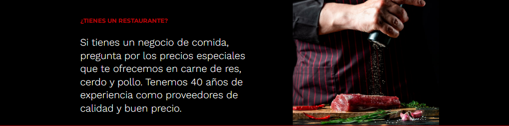

TuxCarne
CARNICERÍAS CDMX. DISTRIBUIDORA DE CARNES, PROVEEDORES DE CARNES PARA RESTAURANTES
Líderes en venta de carne en la CDMX. Venta de carne para restaurantes,
comedores industriales, chefs, empresas y gobierno
Contamos con entregas en toda la CDMX y zona metropolitana.
Todos nuestros productos son empacadados y etiquetas, cumpliendo
con los estándaes de calidad.

SOSTENIBILIDAD
Empresas comprometidas por un mundo mejor
El 19 de noviembre de 2020, TuxCarne firmó la
Adhesión con el Pacto Mundial México de la ONU,
con el que se compromete a alinear sus estrategias
de negocio con los principios universales relacionados
con la sostenibilidad, en áreas como derechos humanos, laborales,
ambientales y de combate a la corrupción.
NUESTROS COMPROMISOS
En TuxCarne asumimos nuestro importante papel en la Agenda 2030 de la ONU y nos comprometemos
con las buenas prácticas para el respeto y protección de las especies y nuestro
entorno, a través de una transformación profunda en la estrategia corporativa, convirtiéndonos
en la primera empresa del sector en adaptar su plan estratégico empresarial al plan de la ONU, y
alinearlo con la visión del CNA 2030.
Impactamos de forma directa e importante en los siguientes Objetivos de Desarrollo Sostenible (ODS).
 Venta de carne de res
Venta de carne de res